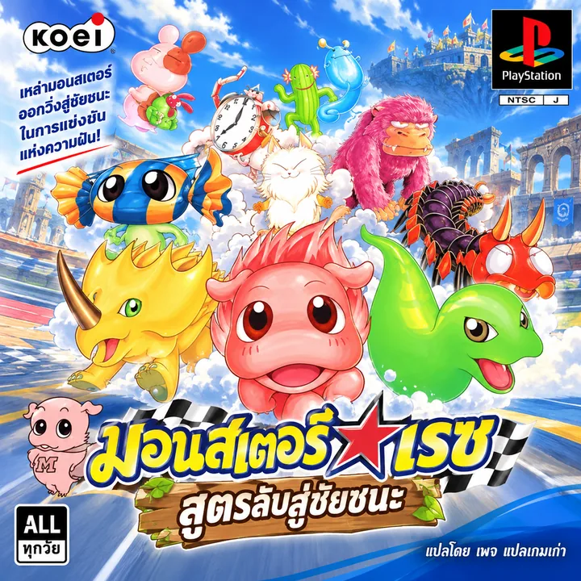

Monster Race
ภาษาไทย v1.0 · PlayStation
Monster Race: สูตรลับสู่ชัยชนะ — เพจแปลเกมเก่า
Monster Race คือเกม RPG ผจญภัยที่ผสมการสะสม ฝึก และแข่งมอนสเตอร์ พาเราออกเดินทางไปกับเลนนี่ เด็กหนุ่มผู้ฝันอยากคว้าแชมป์ Berry Best Cup ระหว่างทางจะได้พบมอนสเตอร์ตัวใหม่และจัดทีมลงสนาม
ทุกสนามต้องเลือกมอนสเตอร์ให้เหมาะกับภูมิประเทศ สลับตัวและใช้ทักษะให้ถูกจังหวะ ฉบับ PlayStation รวมเรื่องราวของ Monster Race และ Monster Race: Okawari พร้อมเนื้อหาเพิ่มเติม จัดทำฉบับภาษาไทยนี้ด้วยความคิดถึงเกมวัยเด็ก อยากชวนผู้เล่นเก่ากลับมาย้อนความทรงจำ และให้ผู้เล่นใหม่ได้รู้จักเกมคลาสสิกเรื่องนี้
แพตช์ภาษาไทย Monster Race v1.0 สำหรับ PlayStation รุ่นญี่ปุ่น สร้างไฟล์ BIN และ CUE ที่ใช้เปิดในอีมูเลเตอร์ได้
ตรวจการแปะแพตช์และ SHA-256 ของไฟล์เป้าหมายผ่านครบแล้ว รุ่นนี้ยังรอทดสอบบูตและเล่นในอีมูเลเตอร์จริง เริ่มเกมใหม่เพื่อทดสอบข้อความตั้งแต่ต้น และอย่าใช้ save state เก่า
Monster Race (Japan) · SLPM 861.43
ขนาดไฟล์ BIN: 198,120,720 ไบต์
ระบบตรวจ SHA-256 เพื่อป้องกันการใช้กับรุ่นอื่นหรือไฟล์ที่ถูกแก้แล้ว
- เตรียมไฟล์ BIN จากแผ่นญี่ปุ่นต้นฉบับไว้ในเครื่อง
- เลือกไฟล์ BIN แล้วกดสร้างแพตช์ ระบบทำงานในเบราว์เซอร์ของคุณ
- เก็บไฟล์ BIN และ CUE ที่ดาวน์โหลดไว้โฟลเดอร์เดียวกัน แล้วเปิด CUE ใน DuckStation หรืออีมูเลเตอร์ PS1
ไฟล์ BIN ต้นฉบับไม่ถูกอัปโหลดหรือส่งออกจากเครื่อง
กำลังโหลดแพตช์…
SHA-256 สำหรับตรวจสอบ
BIN ต้นฉบับc30b46781ae99ab94679cfff3732bcf3cdb11432b65d791fda6ac392f605d714
BIN ภาษาไทย v1.065f49913eb33e39a102dad55ec3419059537010c2672ef2c1bdde40b11524612